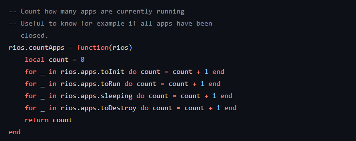
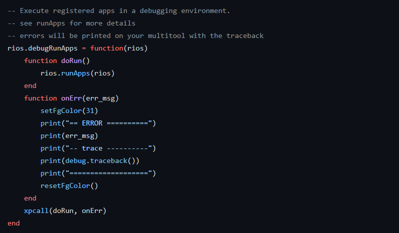

rios.countApps(rios)
Description
Counts how many apps are currently running.
Parameters
rios:- An instance of RIOS itself, because the function is built with partial data we need to be sure we got the most complete instance.
rios.debugRunApps(rios)
Description
Counts how many apps are currently running.
Parameters
rios:- An instance of RIOS itself, because the function is built with partial data we need to be sure we got the most complete instance.